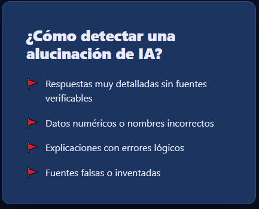
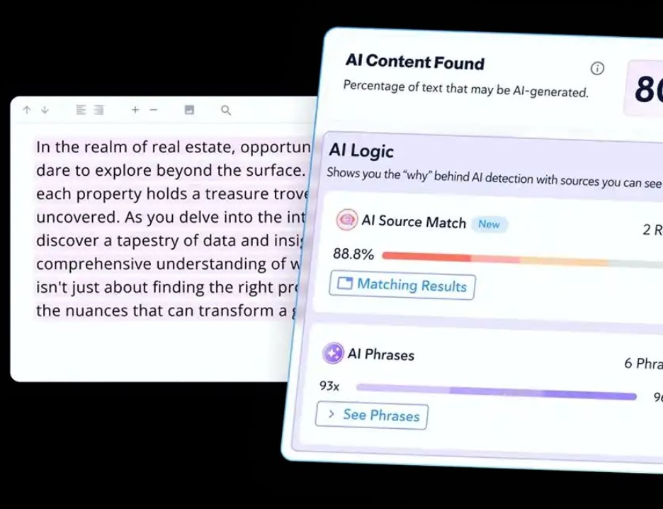
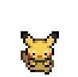
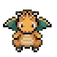
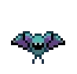
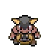
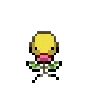
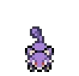

¿Sabías que...?
La IA no piensa ni entiende lo que escribe; solo predice la palabra que tiene más sentido matemático según lo que ha leído en internet.

La IA no piensa ni entiende lo que escribe; solo predice la palabra que tiene más sentido matemático según lo que ha leído en internet.
Nunca te fíes al 100% de una fecha, una cita textual o una fórmula dada por la IA sin antes comprobarla en un libro o sitio oficial.
La herramienta más potente contra la desinformación digital no es otro programa, sino tu pensamiento crítico.

Las alucinaciones de la inteligencia artificial son un fenómeno en el cual los modelos de lenguaje grande, los chatbots de IA generativa o las herramientas de visión artificial perciben patrones u objetos inexistentes o imperceptibles para los observadores humanos, creando resultados que no tienen sentido, son engañosos o totalmente inexactos, pero que se presentan con total seguridad y como si fueran un hecho. Esto ocurre porque el algoritmo produce respuestas que no se basan en sus datos de entrenamiento, son decodificadas incorrectamente por el transformador o no siguen ningún patrón identificable. En el ámbito escolar del CBTis 177, esto representa un grave problema para los estudiantes, ya que la IA mantiene un tono sumamente convincente al inventar datos, lo que los induce al error, les hace perder tiempo y pone en riesgo sus calificaciones si confían ciegamente en información falsa.
Este problema se origina a partir de diversos factores técnicos, tales como el sobreajuste, el sesgo o la inexactitud en los datos de entrenamiento, la alta complejidad del modelo y la falta de restricciones en los parámetros de salida. Entregar información falsa en la escuela desvirtúa por completo el propósito del aprendizaje y puede derivar en sanciones académicas o calificaciones reprobatorias. Desde la perspectiva de la cultura digital y el pensamiento crítico, esta situación demuestra que la tecnología no es infalible ni sustituye el análisis humano, por lo que los alumnos tienen la responsabilidad de cuestionar los resultados automatizados, verificar la trazabilidad de los datos y no asumir que todo lo generado por una máquina es verídico.


Para combatir y prevenir las alucinaciones tecnológicas, las guías especializadas proponen un conjunto de medidas y pasos de verificación que van desde el entrenamiento de los modelos con datos de alta calidad y la definición clara de su propósito, hasta la utilización de plantillas, la limitación de respuestas mediante filtros y la evaluación continua. Como paso fundamental de verificación, es indispensable aplicar un método que contemple comprobar la trazabilidad de las fuentes buscando títulos exactos y registros de autores o editores, revisar la consistencia separando los datos para confirmar que no se hayan combinado incorrectamente, y corroborar la actualidad de la información consultando fuentes primarias vigentes.
Para sustentar y respaldar el análisis de este problema, se han tomado como referencia fuentes oficiales e institucionales confiables. Entre ellas destacan la plataforma global de IBM, enciclopedias en línea como Wikipedia, medios informativos internacionales como la BBC, y guías académicas institucionales como las Biblioguías de la Universidad de Burgos, las cuales detallan de manera estructurada el concepto, las causas y las medidas de mitigación de las alucinaciones.

Un ejemplo práctico de esta situación ocurre cuando un estudiante solicita antecedentes históricos o científicos para una tarea y la IA genera citas bibliográficas o cifras exactas con una redacción impecable pero totalmente inventadas. Si el alumno entrega el trabajo sin contrastarlo previamente, el profesor detectará el error, lo que repercutirá directamente en una baja calificación y en la falta de un aprendizaje real. Curiosamente, fuera del entorno académico estricto, las alucinaciones de la IA también presentan usos creativos positivos en áreas como el diseño artístico, la visualización de datos financieros y la creación de entornos inmersivos en videojuegos o realidad virtual; sin embargo, en la investigación escolar, deben manejarse siempre con extrema cautela mediante la supervisión humana.
Conoce a nuestro equipo







